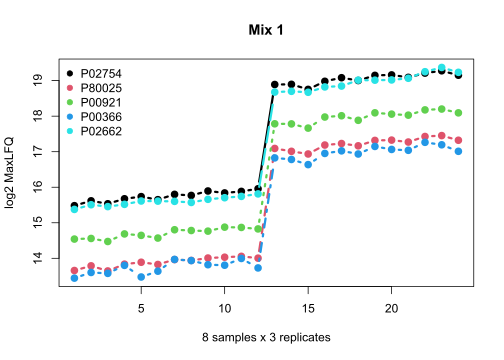
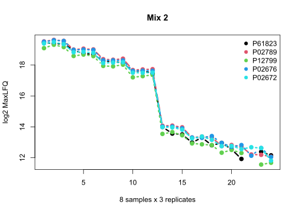
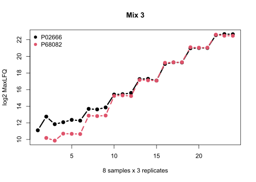
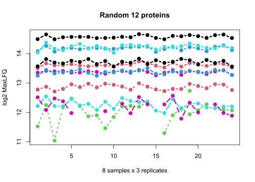

Processing DIA-NN 1.8.1 output
We processed the Bruderer15 dataset (Bruderer et al., MCP 2015) using DIA-NN 1.8.1 (Demichev et al., Nature Methods 2020) with the switch --report-lib-info turned on. The switch gives an extra column Fragment.Info to test iq’s new feature. Usually, the user does not need to turn it on.
Download DIA-NN output report.zip and unzip the file to obtain the long format ouput report.tsv (Pham, Zenodo 2025, https://doi.org/10.5281/zenodo.14823673).
A protein group report for downstream analysis can be obtained with a single statement in R
library(iq)
process_long_format("report.tsv", output_filename = "report-pg.tsv")As an aside, usually the user wants to include additional annotation columns in the final report. This is possible by specifying the annotation_col parameter.
process_long_format("report.tsv", output_filename = "report-pg-annotated.tsv",
annotation_col = c("Protein.Names", "Genes"))Also, by default, we filter the report at 1% run-sepcific FDR at both precursor level and protein group level. To filter global FDR (available with a recent version of DIA-NN), use the parameter filter_double_less.
process_long_format("report.tsv", output_filename = "report-pg-global.tsv",
annotation_col = c("Protein.Names", "Genes"),
filter_double_less = c("Global.Q.Value" = "0.01", "Global.PG.Q.Value" = "0.01")) We continue with loading the result file report-pg.tsv to check the quantitative values of the spike-in proteins. For convenience, we will use the spike-in protein names instead of the protein group names.
pg <- read.delim("report-pg.tsv")
rownames(pg) <- pg$Protein.Group
spike_ins <- c("P02754", "P80025", "P00921", "P00366", "P02662", # mix 1
"P61823", "P02789", "P12799", "P02676", "P02672", # mix 2
"P02666", "P68082") # mix 3
# change rownames to spike_ins names
for (i in 1: length(spike_ins)) {
rownames(pg)[grep(spike_ins[i], rownames(pg))] <- spike_ins[i]
}Mix 1
Here is the ground truth for proteins in Mix 1 (P02754, P80025, P00921, P00366, P02662). Each sample was measured in triplicate.
| Sample | relative | fmol/ul |
|---|---|---|
| 1 | 1 | 1.5 |
| 2 | 1.1 | 1.65 |
| 3 | 1.21 | 1.815 |
| 4 | 1.33 | 1.995 |
| 5 | 10 | 15 |
| 6 | 11.01 | 16.515 |
| 7 | 12.11 | 18.165 |
| 8 | 13.33 | 19.995 |
matplot(t(pg[spike_ins[1:5], 2:25]), type = 'b', col = 1:5 , pch=19, lwd = 3,
ylab="log2 MaxLFQ", main = "Mix 1", xlab = "8 samples x 3 replicates")
legend("topleft", legend = spike_ins[1:5], col = 1:5, pch=19, bty = "n")
We see that the triplicates are consistent and the spikeins in first 4 samples (12 runs) are about 10 fold down as expected (log2(10) ~ 3.3).
Mix 2
Here is the ground truth of proteins in Mix 2 (P61823, P02789, P12799, P02676, P02672).
| Sample | relative | fmol/ul |
|---|---|---|
| 1 | 200 | 100 |
| 2 | 125.99 | 62.995 |
| 3 | 79.37 | 39.685 |
| 4 | 50 | 25 |
| 5 | 4 | 2 |
| 6 | 2.52 | 1.26 |
| 7 | 1.59 | 0.795 |
| 8 | 1 | 0.5 |
matplot(t(pg[spike_ins[6:10], 2:25]), type = 'b', col = 1:5 , pch=19, lwd = 3,
ylab="log2 MaxLFQ", main = "Mix 2", xlab = "8 samples x 3 replicates")
legend("topright", legend = spike_ins[6:10], col = 1:5, pch=19, bty = "n")
In this mix, proteins in the first 4 samples are higher. Fold change between sample 1 and sample 5 is 50, which is approximately 5.6 in log2 space.
Mix 3
Here is the ground truth of proteins in Mix 3 (P02666, P68082).
| Sample | relative | fmol/ul |
|---|---|---|
| 1 | 1 | 0.05 |
| 2 | 4 | 0.2 |
| 3 | 16 | 0.8 |
| 4 | 64 | 3.2 |
| 5 | 256 | 12.8 |
| 6 | 1024 | 51.2 |
| 7 | 4096 | 204.8 |
| 8 | 16384 | 819.2 |
matplot(t(pg[spike_ins[11:12], 2:25]), type = 'b', col = 1:6 , pch=19, lwd = 3,
ylab="log2 MaxLFQ", main = "Mix 3", xlab = "8 samples x 3 replicates")
legend("topleft", legend = spike_ins[11:12], col = 1:2, pch=19, bty = "n")
In this mix, the protein concentration increases 4 fold from sample 1 to sample 8. Thus, we expect a staircase shape with an increase of 2 in log2 space.
Random 12 proteins
set.seed(0)
matplot(t(pg[sample(1:nrow(pg), 12), 2:25]), type = 'b', col = 1:6 , pch=19, lwd = 3,
ylab="log2 MaxLFQ", main = "Random 12 proteins", xlab = "8 samples x 3 replicates")
This is a set of 12 random proteins in the background. High abundance proteins show a consistent pattern while lower abundance proteins exhibits more variation and missing data, which is expected from mass spectrometry-based proteomics data.